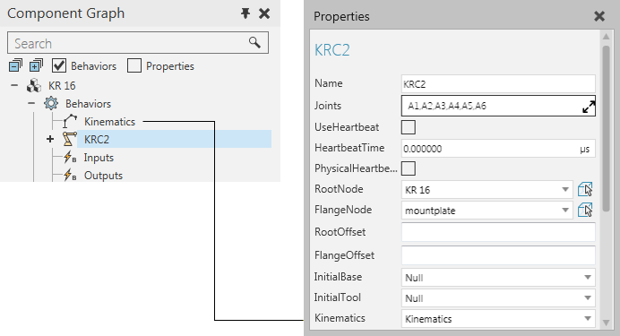
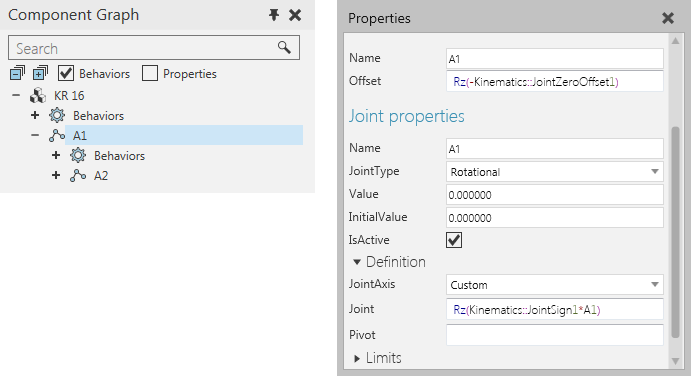

A kinematics type behavior is used to define the forward and/or inverse kinematics of a component and its node structure, for example robots.
Contents Hide
| Name | Description |
| Articulated Kinematics | Defines the kinematics of articulated robots, for example six-axis robots. |
| Cartesian Kinematics | Defines the kinematics of linear robots, for example three-axis robots, with additional support for three-axis wrist movement. |
| Delta Kinematics | Defines the kinematics of delta type robots. |
| Parallelogram Kinematics | Defines the kinematics of parallelogram type robots. |
| Python Kinematics | Defines custom kinematics for components using scripts. |
| Scara Kinematics | Defines the kinematics of SCARA type robots. |
In all cases, a kinematics type behavior must be assigned to a Robot Controller behavior in order to be used when solving kinematic equations.

The use of a kinematics type behavior does not remove the need to properly define the joints of a component.
